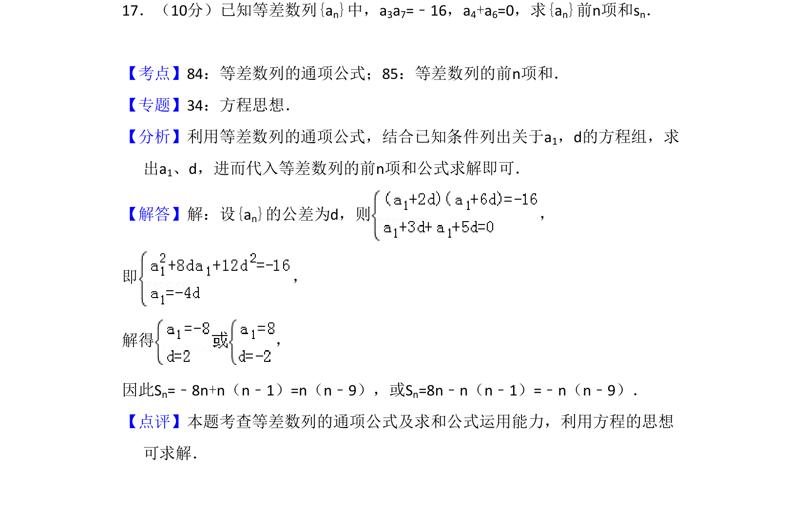
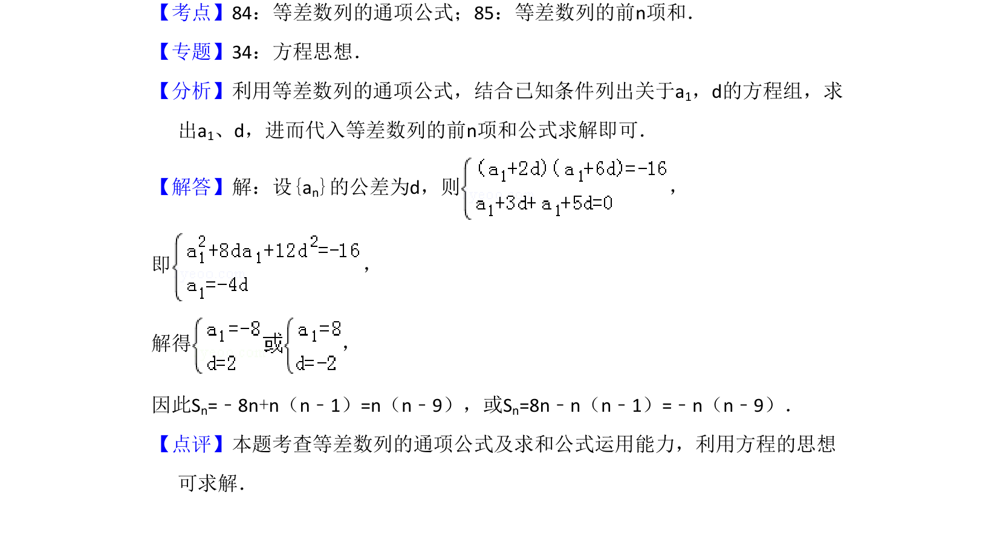

考点：等差数列通项公式 等差数列前n项和 方程思想

已知等差数列的项间关系求前n项和，利用方程思想解出首项与公差。

📄 原 PDF 第 11 页：
素材/真题/吉林/2008-2024·（吉林）数学高考真题/2009年高考数学试卷（文）（全国卷Ⅱ）（解析卷）.pdf
17．（10分）已知等差数列{an}中，a3a7=﹣16，a4+a6=0，求{an}前n项和sn．
【考点】84：等差数列的通项公式；85：等差数列的前n项和．菁优网版权所有 【专题】34：方程思想． 【分析】利用等差数列的通项公式，结合已知条件列出关于a1，d的方程组，求 出a1、d，进而代入等差数列的前n项和公式求解即可． 【解答】解：设{an}的公差为d，则 ， 即 ， 解得 ， 因此Sn=﹣8n+n（n﹣1）=n（n﹣9），或Sn=8n﹣n（n﹣1）=﹣n（n﹣9）． 【点评】本题考查等差数列的通项公式及求和公式运用能力，利用方程的思想 可求解．